An Introduction to World Computing
Build small programs that copy a world's rules, check they are right, snap them together, and run them
Jim Schwoebel — Quome / OpenWorld
github.com/quome-cloud/openworld
scan to open & star the repo
The roadmap
The whole talk on one map
1Why bother
2The system
3Results
4Where it's useful
5Stepping back
1Why bother
2The system
3Results
4Where it's useful
5Stepping back
Part 1
Why bother
From computing to computing whole worlds
Why bother
Building a checked world, fast
100
toy worlds, 6 fields
2.8 min
typical time to build one
47,000×
faster than asking the model each step
Why bother
What is a world computer?
- A machine that builds, checks, snaps together, and runs pretend worlds
- The rules are plain code you can read and test -- not a black-box trained blob
- Old-style computing made math cheap and easy to inspect
- World computing wants to do the same thing for whole worlds
- The basic job: given where you are and what you do, say what happens next
Why bother
Two kinds of world models
The picture-guessing kind
- Guesses pixels (Dreamer, Sora)
- Needs mountains of data
- Small mistakes pile up
- You can't read the insides
The plain-code kind
- A readable program over facts
- The model writes it, then we check it
- Right at every step, no matter how far
- You can read the source
Why bother
Why we want checked code
- The win isn't a clever new rule -- the model often already knows the rule
- The win is running that rule exactly and fast, as a tool the agent can call
- It's exact: no piling-up mistakes; a trained rule rots as (1-e)^t over time
- Plain code runs way faster than asking the model at every single step
- PyTorch didn't invent new models -- it made them quick to try out
Why bother
World, action, agent, and the run
state saction a
→
Worldthe checked rule
→
next state s′
The same World is both the real thing and your planning tool — the player is a separate part
Why bother
The world computer, measured on cost, speed, and quality
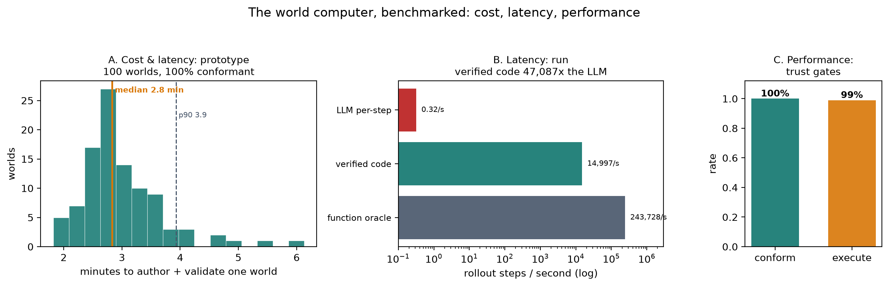
One agent writes checked, ready-to-run worlds; plain checked code runs about 47,000x faster than asking the model each step
- A: 100 worlds built, typically 2.8 min each (9 out of 10 under 3.9)
- B: checked code runs 14,997 steps a second vs 0.32 when the model guesses each step
- C: 100% pass the shape check; 99% actually run and behave
Why bother
What we add
- The idea of world computing, plus a way to snap worlds together that keeps the checking
- OpenWorld: spell out the world, check the code, turn goals up or down with dials
- Building: 100 worlds, 6 fields, minutes each, on an ordinary laptop
- Running: full-speed, exact, readable runs
- Testing, trust checks, and small shareable files anyone can inspect
1Why bother
2The system
3Results
4Where it's useful
5Stepping back
Part 2
The system
OpenWorld: the parts, the relay, and snapping worlds together
The system
Six parts you can test one by one
- World: what the facts are, what you can do, the rules, and a swappable rules-engine
- Three engines: checked code, the model guessing (our yardstick), and a known-right answer
- Agent: either the model planning, or a simple fixed strategy
- Goals and Dials: state what you care about and how much
- The run, the tuner, and the judge -- all on a local model, no extra software needed
The system
The write, generate, check relay
1State it
→2Generate
→3Check 1: does it parse
→4Check 2: run it safe
→5Check 3: critic
→6Accept
The system
One plain-code world, start to finish

See -> world -> report/act, all built from a real spec so the labels can't drift
- Sensors turn any kind of input into plain facts and numbers
- Checked rules step forward inside a stack of nested worlds
- Goals (re-set by dials) score it; the see-and-act edge returns reports and tool calls
The system
Build big worlds from small checked pieces
- Worlds are just values; snap two together and you still get a world
- The pieces run untouched; bridges link them, roll-ups summarize, injections pass values in
- Snapping stays clean: same in, same out, and grouping doesn't matter (once names line up)
- The checking carries over: checked pieces make a checked whole
- Turns one big n-rule job into n small jobs you can check on their own
The system
Writing the reward as checked code too
- Make the goal match the rules: a reward you can read and check, written as code
- The reward code runs in the same safe little Python box as the rules
- We only accept it when it exactly matches rewards we held back to test with
- Now the whole loop is checked: seeing, rules, reward, and planning
- Exactly the piece an ARC-AGI-3-style 'figure out the goal' puzzle needs
How much it costs and how fast it is to build
The system
How fast is building? (E68)
- Claude Code wrote 100 world models from one-line descriptions
- 6 careful fields: health, finance, law, cyber, energy, AI agents
- 100% pass the shape check; typical build 2.8 min, average 3.0, most under 3.9, worst 6.1
- 99 of 100 actually run and change state under random play
- Hand-building a similar simulator would take days to weeks
The system
A map of all 100 built worlds (E68/E68b)
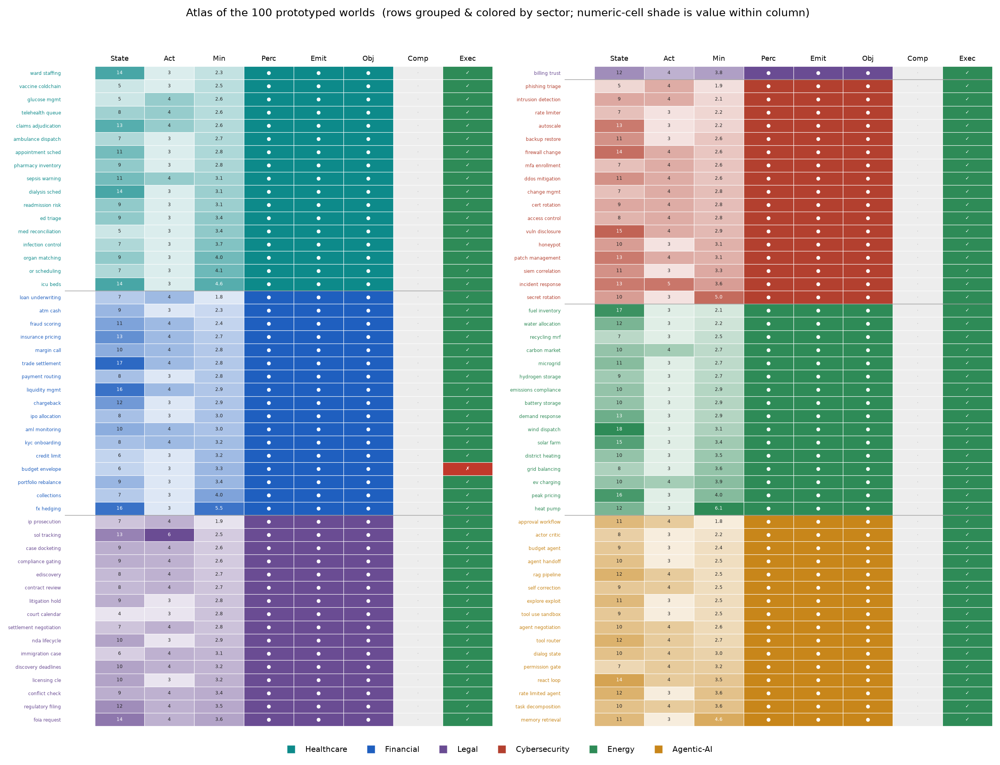
One row per world, grouped by field; every one spells out how it sees and reports
- Columns: how much state, how many actions, minutes to build, and its edges
- The 'run' mark is the behavior check -- only one recipe fails to move at all
- Made straight from each world's record, so it can't drift from the results
When you can just write the rules, building a correct world model becomes a minutes-long, push-a-button job.
How we set up the tests
The system
Worlds where we know the true answer
- Three simple known-answer worlds: sprint, orchard, triage
- The known answers are hand-written rules we trust
- We compare the model-written and trained engines against them exactly
- A coding world: 20 buggy functions with hidden tests, run-the-tests rules
- Snapping, nesting, and changing rules are tested in E30 through E32
The system
Models, machine, yardstick, and stats
- All run locally on an Apple-chip laptop -- no cloud, no extra training
- qwen2.5 7b/3b/1.5b, plus llama3.1:8b and gemma2:9b to check across families
- Yardstick: the same model just guessing each next step
- Rates get 95% error bars; the judge test uses a strict paired check
- Seeds fixed; every number rebuilds itself from one pipeline
1Why bother
2The system
3Results
4Where it's useful
5Stepping back
Part 3
Results
Accuracy, speed, and trust
Results
Quality and speed (E04, E11)
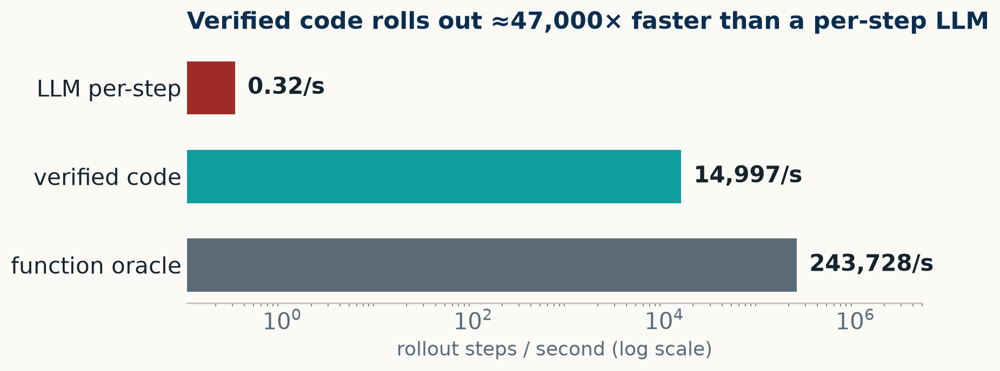
One checked rule reused at every step -- so mistakes never pile up
- Code the 7B model wrote was exact on 24/24 20-step runs; 100% even on 10x situations it never saw
- 14,997 steps a second vs 0.32 when the model guesses each step (about 47,000x)
Results
What each check buys you (E3)
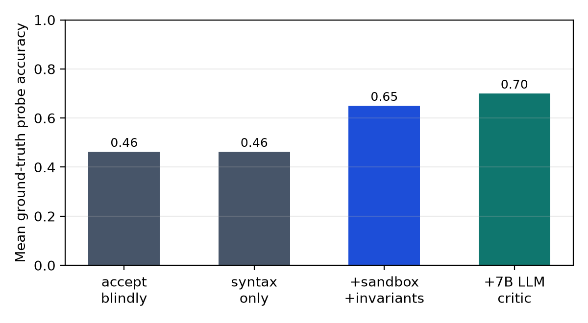
No check 0.46 -> run-it check 0.65 -> add a critic 0.70 (a +0.24 jump)
- A parse-only check adds nothing -- this model's mistakes still parse fine
- No 3B model ever gets it exactly right, under any setup
- Checking buys extra correctness but can't make up for a weak writer
Results
Closing the 'wrongly accepted' gap (E62)
- A single quick test has a blind spot: states you only reach later
- On 3 faults that look clean at first, the single test wrongly passes them 100% of the time
- Re-running across states that hit every branch drops wrong passes to 0%
- Across families (E16): Qwen, Llama, and Gemma all reach a checked pass
- Gemma-2-9B gets the rules perfect every try; seconds per world
Results
The model as a judge, fair test (E13+E17)
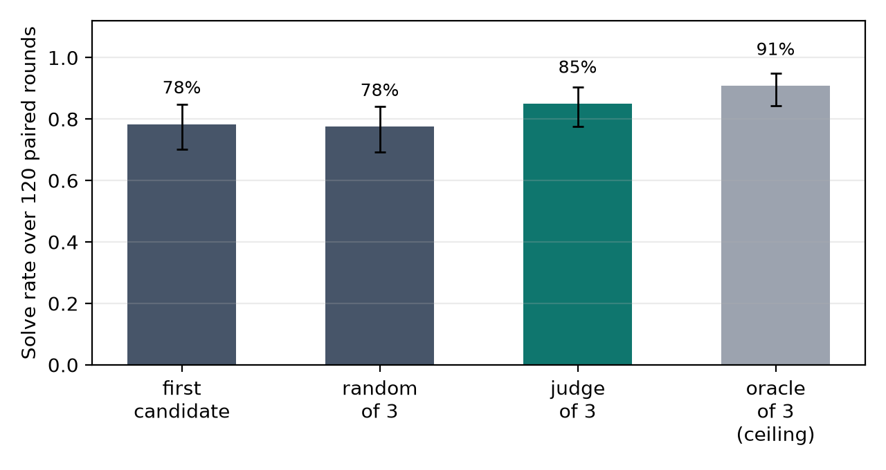
Judge 85% vs coin-flip 78%, first-one 78%, best-possible 91% over 120 rounds
- The judge wins back about half the gap from coin-flip to best-possible (barely significant)
- Flip the order and raw picks agree only ~57%, but accuracy holds steady
- It costs about 4x more to run; judges should screen, not replace, real checking
Results
Inside a snapped-together world (E31)
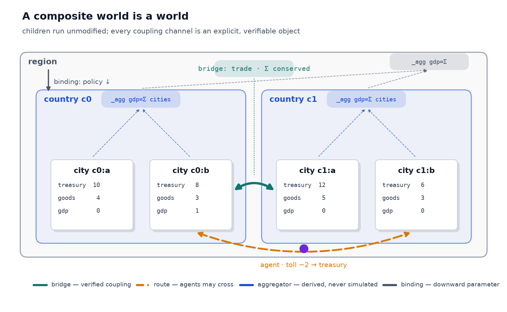
Two countries, each with two cities, snap into a region -- with real numbers
- A bridge carries trade, and the totals always balance
- A route lets an agent cross and pay a toll; roll-ups summarize upward
- An injection hands a parent's setting down to a child
Results
Snapping pieces beats the complexity wall
0.31
One big program
16 rules at once — breaks
16 rules at once — breaks
0.92
Small pieces
four checked 4-rule pieces, joined
four checked 4-rule pieces, joined
Results
What an agent actually sees (E31)
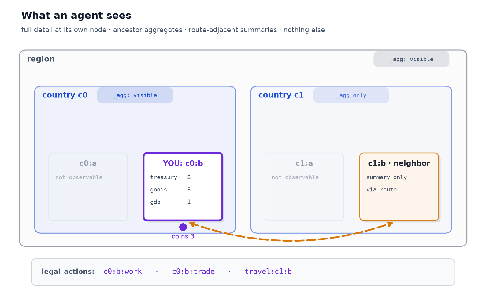
Limited view: your own spot in full, parents as summaries, neighbors as short cards
- Its own city in full; higher levels show only rolled-up summaries
- The city across the route is a summary card; siblings it can't see
- Planners think locally against exact rules, without the big picture
Results
When the rules change, agents move (E33)
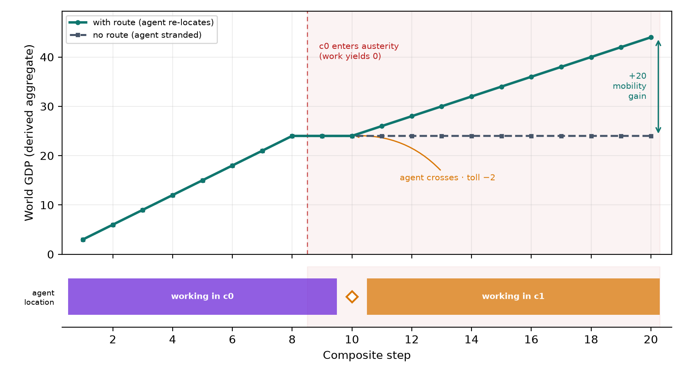
Belt-tightening hits at step 9; the agent pays the toll, moves, and gains +20 mobility
- A shared economy switches into belt-tightening at a set time
- A greedy agent prices the change and crosses to the growing economy
- Both the switching code and one big block of code track the change exactly
Results
The sprint world: splitting a budget (E34)
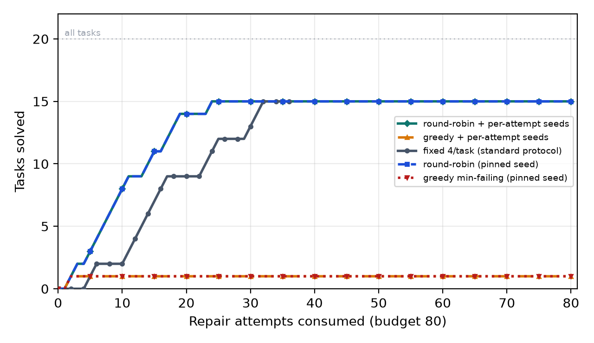
20 repair worlds, budget 80; a fixed plan solves 15/20
- No strategy beats the fixed ceiling -- the leftover tasks are just too hard
- Round-robin reaches that ceiling in about a third fewer tries
- Greedy 'closest to passing' gets stuck grinding one task
Results
See first, then forecast an outbreak (E40)

The see-then-run model is exact both in and out of familiar range; the trained net falls apart at 10x scale
- Read day-0 text plus a ward photo into well, sick, recovered counts, then run 14 days
- The rules add zero error, so the forecast is only as good as the first reading
- E39: this split holds exactly even as reading errors climb from 0 to 0.9
Results
Turning the morality dial (E8)
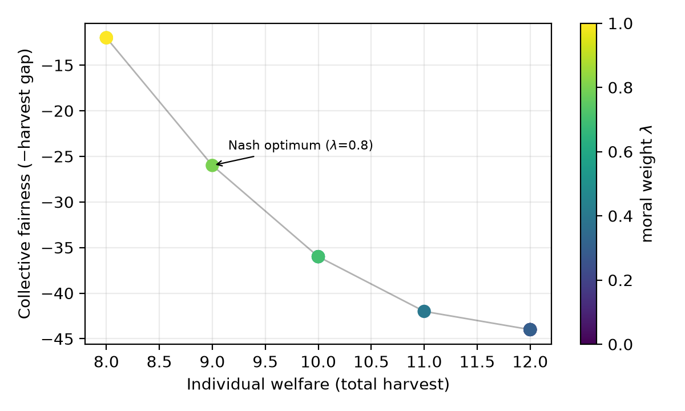
Trade-off between overall good and fairness, swept by a dial; the fair middle sits at 0.8
- All 11 dial points are best-possible trade-offs; more dial = more fairness, steadily
- The values are just stated, weighted settings -- no retraining to shift them
- This is the 'state your values openly' answer to fixed, baked-in values
Worlds you can share and inspect
Results
Small shareable world files (E57)
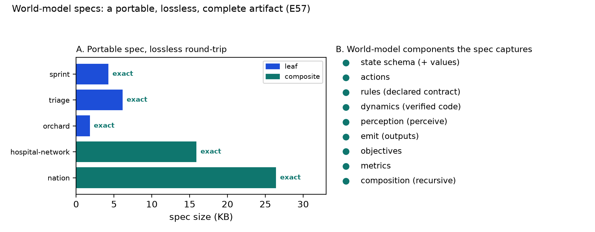
5 worlds save and reload with no loss at a few KB each; nine parts captured
- Save a world, reload it, and it runs exactly the same as before
- Facts, rules, dynamics, seeing/reporting, goals, and scores -- all saved
- Any embedded code sits dead unless you clearly turn running on
Results
An auto-made model card (E57)

One self-contained picture drawn straight from the triage world's file
- A map of the states with the see -> world -> report edge marked
- Panels list the facts, actions, rules, goals, a sample run, and scores
- Also exports to Mermaid and React Flow so you can click around it
1Why bother
2The system
3Results
4Where it's useful
5Stepping back
Part 4
Where it's useful
Fields and demos
Where it's useful
An economy that grows out of snapped checked rules (E44)

6 players; inequality drops 0.22 -> 0.001 with sharing; teaming up raises everyone's lot
- Big-picture numbers (price, inflation, inequality) are roll-ups of the little players
- Each effect is isolated by flipping one checked rule on or off
- The books balance to the penny every tick -- gold only enters and leaves through set taps
Where it's useful
A whole company as nested worlds (E48)
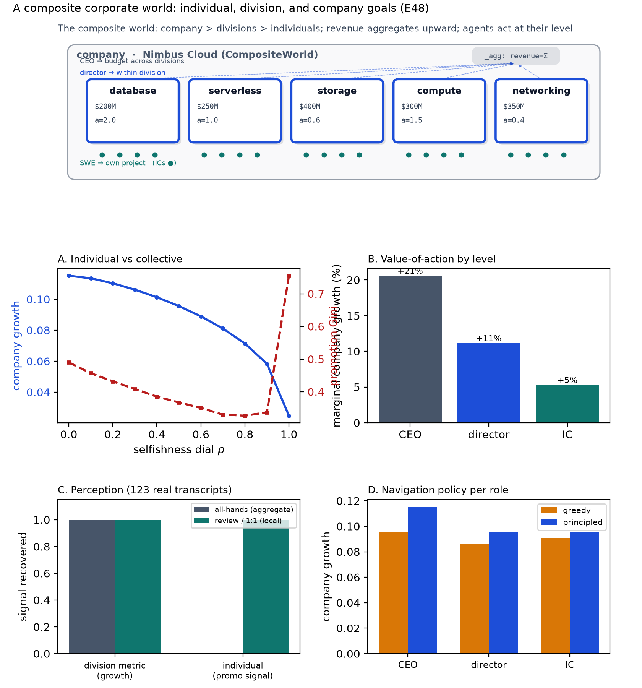
A 5-division, $1500M company as nested worlds; the CEO reshuffling budgets is +21%
- Company > divisions > people; revenue adds up the ladder
- Being selfish trades company growth for lopsided promotions
- You only spot the promotion signal from the one-on-ones, not the top view
Where it's useful
A startup-growth world (E51)
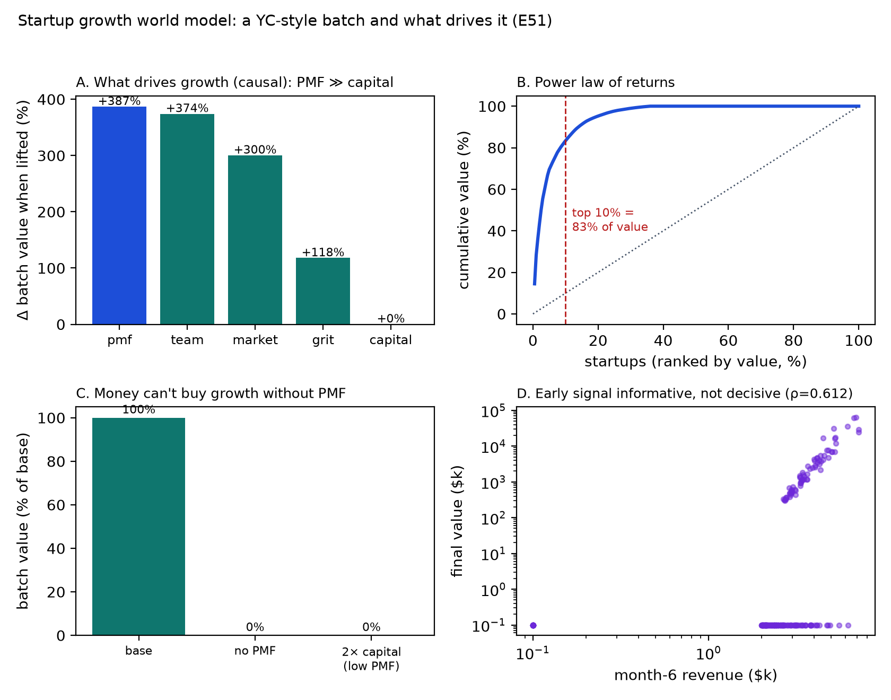
Finding product fit is +387% value; more cash is +0%; the top tenth grab 83% of the value
- Each startup is its own checked world; the batch adds up exactly
- Only 36% survive -- the well-known venture power law shows up
- Spending can't stand in for actually fitting the market
Where it's useful
Relativity as a checked world (E47)

The traveling twin comes back 4 years younger; the GPS fix +38.5 us/day, all from first principles
- Time-slowing is exact; a low-speed trained fit drifts off as speed nears light-speed
- The famous 1971 flying-clock east/west shifts land inside what was measured
- A stated, checked law where trained video models miss the physics
Where it's useful
A one-day trading world (E50)

After costs +15.7% a year but its risk-adjusted score 0.59 < the market's 0.77 -- honest, cost-fragile
- Real prices, walked forward, no peeking ahead, costs included
- It recovers a known fake +40 bps edge, so a weak real result is real
- The point is being rigorous and inspectable, not beating the market
Where it's useful
Cleaning up a signal, see -> world -> report (E52)
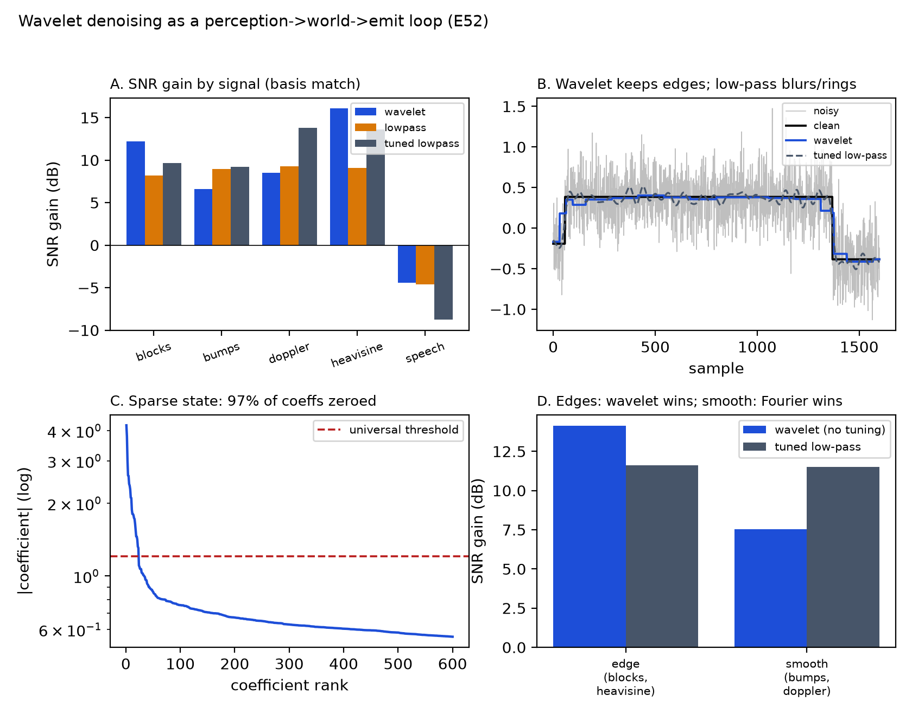
A knob-free wavelet method gains +14.1 dB on edges, beating a tuned blur
- Noisy signal -> a short list of the important pieces
- A stated 'trim the small stuff' rule; then rebuild the clean signal
- We report where it loses too: Fourier wins on smooth, one method is wrong on speech
Where it's useful
A brain as a world made of worlds (E58)

Conscious, unconscious, and the environment, linked by recall/save/act bridges
- Short-term memory, recall-by-content long-term memory, and the environment
- A loop: see -> recall -> think -> act -> watch -> save
- The whole brain saves to a file and reloads with no loss
Where it's useful
A think-ahead ReAct agent with real memory (E58)
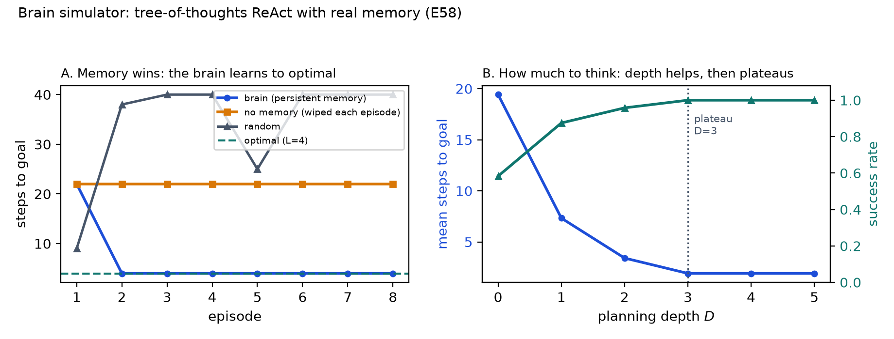
With memory it hits the best score at depth 4; no-memory stalls around 22, random flails
- Keeping the unconscious memory drops steps-to-goal to the best in a couple tries
- Steps fall as you plan deeper, then flatten once you plan far enough ahead
- Thinking ahead helps up to the goal's distance, and no further
Where it's useful
The brain wrapped around a frozen model (E59)
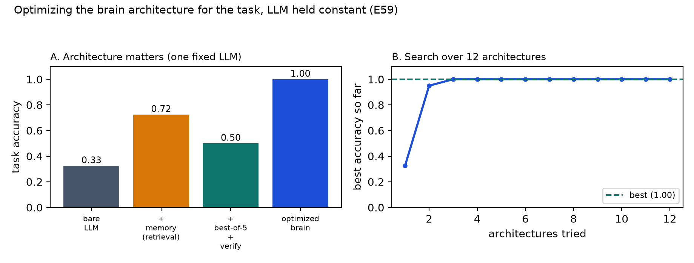
Same model inside: bare 0.33 -> fullest brain 1.00 (+0.68), without touching the model
- Recall makes rare-fact questions answerable; try-many-and-check wins the hard ones
- This order follows from the setup by design, it isn't a surprise finding
- With the model frozen, the brain around it is the thing you improve
Where it's useful
The see -> world -> report -> act edge (E60)
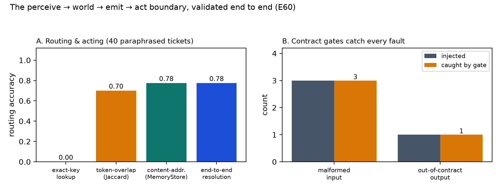
Recall-by-content routes 78% vs word-overlap 70% vs exact-key 0%; solves 78% end to end
- Readers for JSON and text with checks; a memory store; tool and code writers
- The checks catch every bad input we inject and every off-contract output
- Every part saves to a file and reloads with no model needed in the loop
Where it's useful
Splitting a budget up a ladder of models (E35)
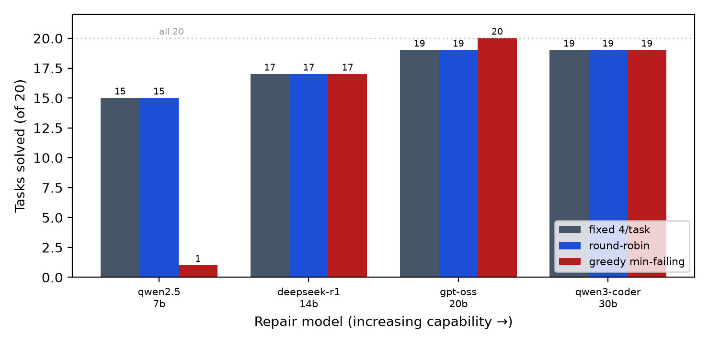
The fixed ceiling rises 15 -> 19/20 with stronger models; the greedy trap fades with scale
- qwen2.5:7b -> deepseek-r1:14b -> gpt-oss:20b -> qwen3-coder:30b
- The greedy trap is a weak-model problem; gpt-oss:20b clears all 20
- Which model you use matters far more than the budget strategy
Where it's useful
Snapping pieces gives better understanding (E36)
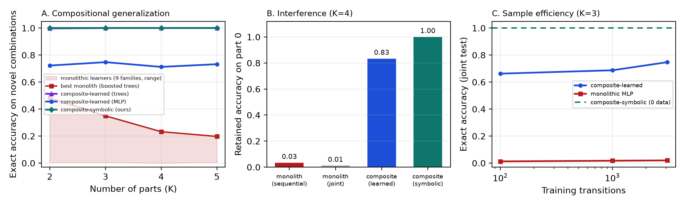
Every one-big-blob learner collapses on new combos; the piece-by-piece one stays flat
- The best big blob (gradient boosting) drops from 0.48 to 0.20 by K=5
- The collapse happens for every kind of learner we tried
- Splitting the problem into pieces -- not scaling the learner -- is what generalizes
Where it's useful
Coping with sudden, silent rule changes (E41)
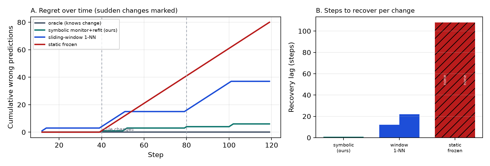
A code monitor re-finds the rule in 1 step; a sliding window lags, and a frozen one never recovers
- A system's hidden setting jumps at unannounced times
- Because the rule is a clear, nameable program, a few looks re-pin it exactly
- This holds as long as the new rule stays in the family we can name
Where it's useful
Agents hopping between linked, changing worlds (E42)
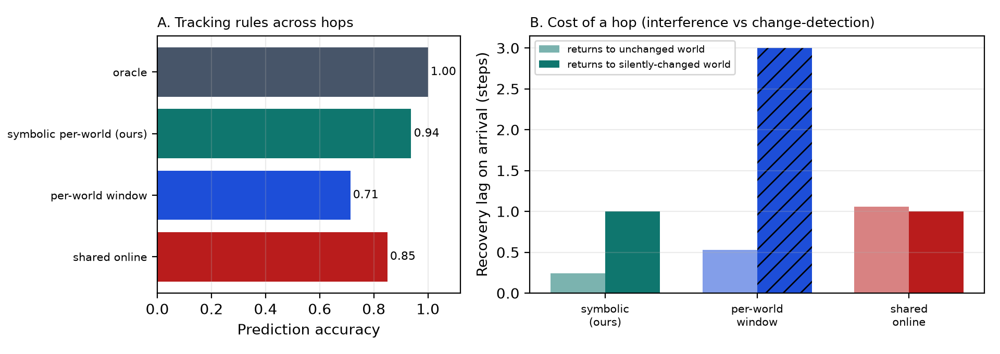
A per-world monitor scores 0.94 and comebacks cost nothing; one shared learner scores 0.85 and gets confused
- Two shifting worlds joined by a toll route; the agent hops back and forth
- A separate program per world keeps each world's rule safe while it's away
- One shared belief can't hold two worlds at the same time
Where it's useful
Next-letter world models: exact even on longer inputs (E45)
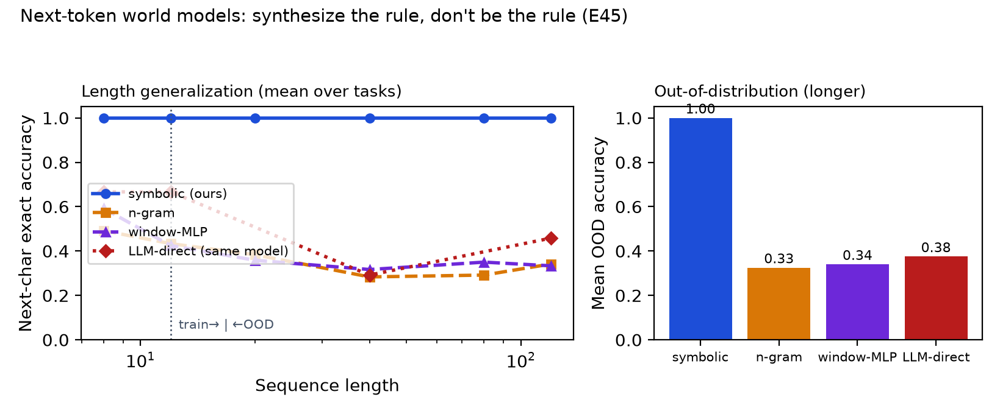
The written program stays exact on new sizes for 3/3 tasks (1.00); the same 30B guessing directly drops to 0.38
- Parity, dyck, copy: memory a fixed window just can't hold
- Writing a program makes it length-proof by design
- Both the n-gram and the fixed-window net rot as things get longer
Where it's useful
A database over many worlds at once (E46)
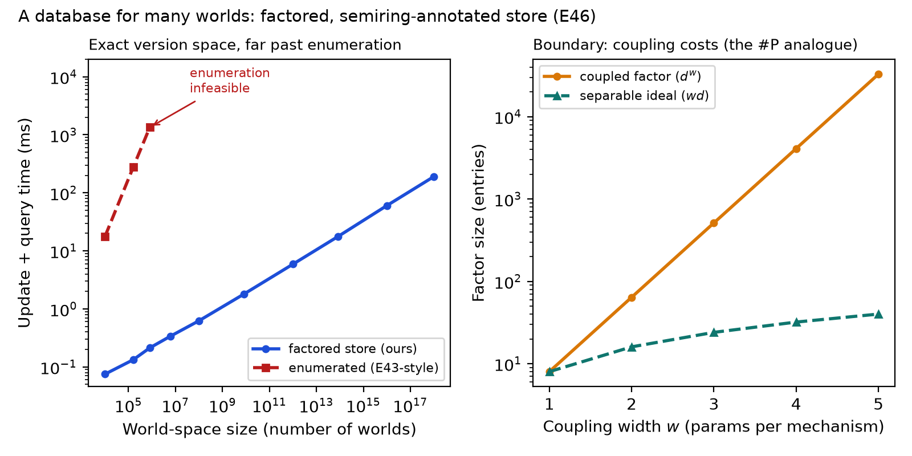
Exact search over 1e18 worlds in 191 ms; the hard-case boundary is shown, not hidden
- The odds break into pieces -> one small piece per mechanism
- One swappable engine answers yes/no, how-many, and how-likely questions
- Tie parameters together tightly and that piece blows up as d^w
Where it's useful
Best path through many learning routes (E49)
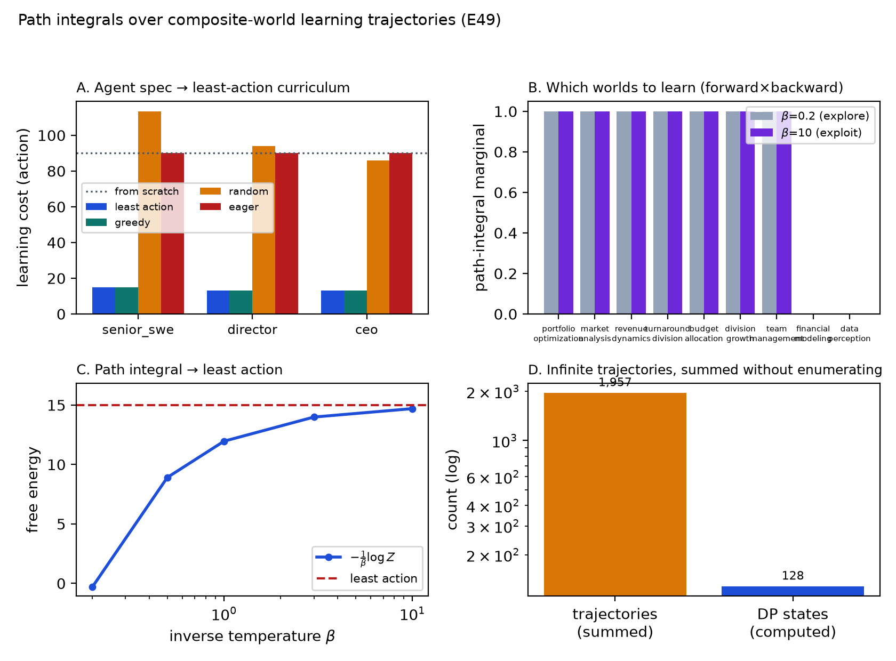
The easiest-path curriculum reuses mastered pieces -- a 6.0x speedup over starting from scratch
- Weight each route by how easy it is; reuse the E46 engine
- A huge number of routes summed cleverly, without listing them all
- Different starting roles (engineer, director, CEO) get different best paths
Where it's useful
Safe, tight worst-case bounds (E54)
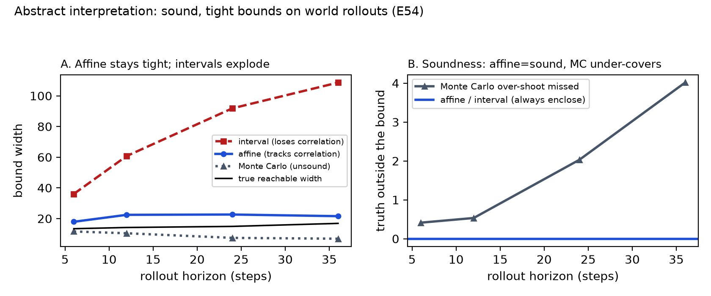
The smart bound is 21.5 wide vs a crude 108.6; random sampling is tight but not guaranteed
- Run the world on whole ranges of states at once -- push the whole set forward
- The smart method tracks how errors cancel; the crude one explodes
- Gives the world model a worst-case run it can promise to stay inside
Where it's useful
Smart probing to pin down the world (E55)
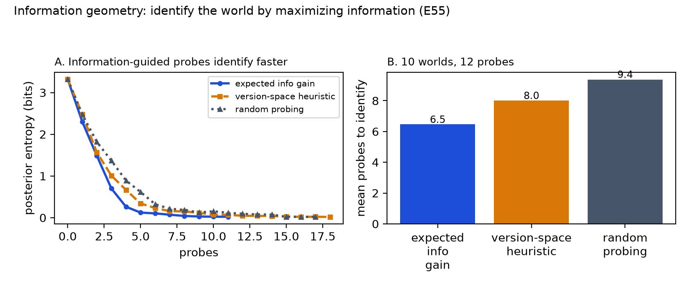
Asking the most informative question finds the true world in 6.5 probes vs 9.4 at random (out of 10)
- Pick the test whose answer would tell you the most
- Be adaptive: stop re-confirming, and separate the worlds still in the running
- Because the choices are countable, this is principled experiment design
1Why bother
2The system
3Results
4Where it's useful
5Stepping back
Part 5
Stepping back
Discussion, limits, and what's next
Stepping back
The big trade, plainly
- Trained models cover lots of pixels, but pay in piling-up mistakes and being unreadable
- Checked code buys exactness, speed, working in new situations, and being inspectable
- Inside the plain-facts world, the results all point one way
- The workflow: state it, check it with invariants, probe intent, tighten, rebuild
- At every stage the thing stays a program you can diff
Stepping back
What these worlds unlock: world-time compute
- Checked worlds label training runs exactly, for free
- Training on many worlds of a field lifts skill on worlds it never saw
- That's world-time compute -- the topic of the companion paper
- Exact, snappable worlds are what make it possible
- But a world computer is useful even if you never train on it
Stepping back
Values as an open, stated thing
- Goals are stated out loud -- the good-vs-fair trade-off is a real dial
- A weighted sum is just one theory of ethics (adding up consequences)
- Roll-ups, hard 'never do this' vetoes, and a moral parliament are different tools
- A hard veto can't be faked by any weighting (E25)
- Stating values openly handles the values problem step by step; it doesn't solve it
Stepping back
Where this falls short
Scope
Plain-facts worlds only
Complexity
One big block breaks past about 8 rules
Scale
20 repair tasks, 3 known-answer worlds
Trust
The judge is weak; self-check is just a screen
Stepping back
Frozen picture-features can't balance a pole (E67)
- The picture-guessing kind's best try at balancing a pole still scores 0%
- Five ways to attach a controller to frozen V-JEPA-2/DINOv2 all score 0
- Yet a simple probe can read the state: it explains 95% of the pole's angle
- Strong frozen features are needed but not enough to control
- Training end-to-end on the task, not better seeing, closes the gap
Wrapping up
Make the model a program, check the program, and keep the values on dials -- a different road than just piling on parameters until the made-up answers go away.
Stepping back
Takeaways and what's next
- A no-training plain-code world model is exact where trained rules pile up mistakes
- Snapping pieces beats the complexity wall; the limit is measured, not hidden
- 100 worlds in minutes on a laptop; small, inspectable, shareable files
- Next: build worlds by snapping written pieces, standard-size coding, mixing seeing with facts
- All the code, 100 recipes, and 79 experiments rebuild from one repository
The code is open — go star it
github.com/quome-cloud/openworld
100 world recipes · the papers · every experiment